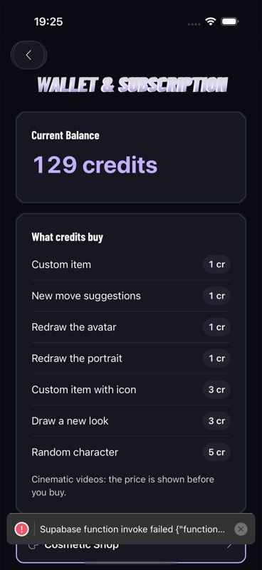
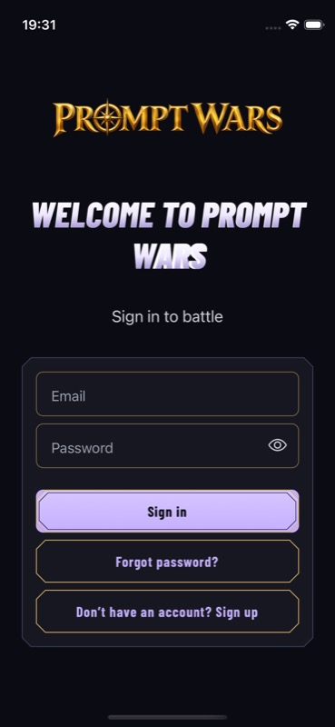

P1 F1 · Native + source
Metallic headings render as two misaligned text layers
Long and multiline headings visibly double up. The end of “WALLET & SUBSCRIPTION” and “PROMPT WARS” is especially affected; accessibility text makes the split more obvious.
Adjust: Use one readable glyph rendering path. Keep solid native text as the reliable fallback; retain metallic treatment only when it shares exactly the same geometry. Do not shrink text or disable scaling.
Implementation evidence & acceptance
GameDisplayTitle paints native GameText and an independent SVG text layer. The native result proves that their glyph metrics do not always agree; the exact combination of weight, baseline and letter spacing still needs isolation.
Accept when: Single, sharp glyphs for one-line, multiline, long, diacritic and non-Latin headings at default/accessibility sizes, including font loading/failure and live size changes.
components/game/GameDisplayTitle.tsx
components/game/GameText.tsx


Long metallic title has visibly misaligned duplicate paint.


Multiline branded heading shows paint misalignment; branding dominates the form entry.